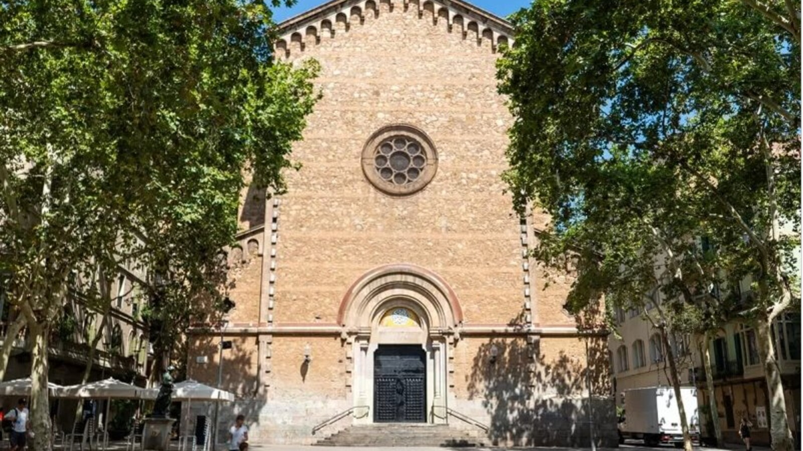
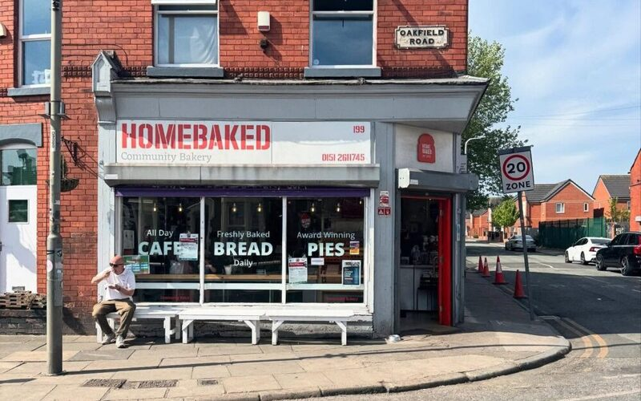
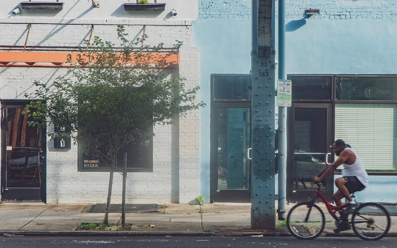

Cas documentat
Febrer 2026
La Ferreteria Camps abaixa la persiana després de 90 anys
Un lloguer de 15.000 € mensuals i la caiguda de clientela tradicional acaben amb un dels comerços més emblemàtics de Gràcia. La seva história ha impulsat la creació d'Abans Que Tanqui.
Llegir el cas complet →

Anàlisi
Febrer 2026
Què és el dumping i com afecta el comerç local?
Darrere de molts tancaments hi ha una estratègia concreta i poc visible. Entendre-la és el primer pas per no normalitzar-la.
Llegir l'article →

Anàlisi
Febrer 2026
Cinc grans grups, 300 establiments: com les cadenes esborren els forns
Un model de negoci que expulsa progressivament els forns artesans amb un buit legal que els afavoreix.
Llegir l'article →

Context
Gener 2026
Gràcia perd un comerç cada setmana: les dades de 2025
El barri ha registrat el nombre més alt de tancaments comercials dels últims deu anys. Quins sectors han patit més?
Pròximament

Desembre 2025
El model Homebaked: recuperar un forn des de la comunitat
Una cooperativa a Liverpool que porta 10 anys demostrant que un altre model és possible.
Llegir →

Novembre 2025
Com funciona el Kensington Corridor Trust a Philadelphia
Un trust comunitari que ha adquirit locals comercials per protegir el comerç local davant la gentrificació.
Llegir →
Octubre 2025
Cooperatives de treball al sector comercial: marc legal a Catalunya
Guia bàsica sobre les formes jurídiques disponibles per a cooperatives que volen gestionar comerços a Catalunya.
Llegir →